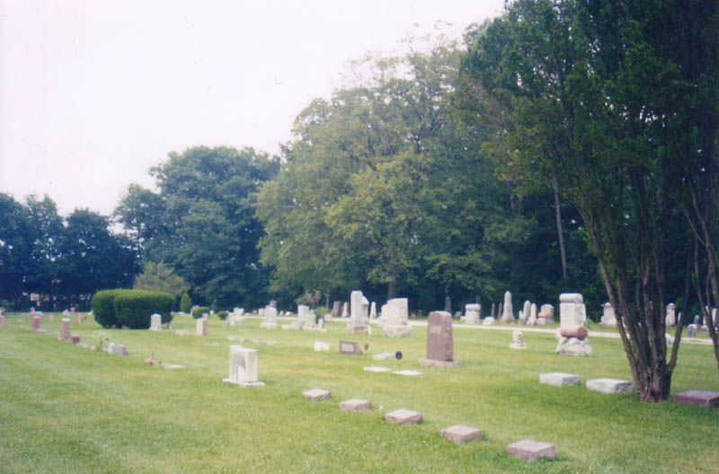

This fairly modern-looking graveyard is located on Flint Road in Sharon Township, Franklin County, in the northern part of the county just outside Worthington. It's a remnant from the ghost town of Flint, which is also profiled here. Apparently the cemetery was known as Gardner Cemetery when it was established in 1874, before Flint came along in 1908 and changed the name to go along with the newly-formed town.

Surprisingly for a cemetery that served a now-nonexistent village, the Flint Cemetery is still used, and even has extra land cleared out along one edge for future burials. New interments with their modern black-marble stones are made alongside slim markers belonging to members of some of Flint's founding families, some of whom must have worked on the railroad nearby.

Katydid, whose camera took these very nice photographs, took a look at the Flint Cemetery with me in August of 2003. We had been uncovering pieces of the original town of Flint for some time, and decided the town cemetery was a must-see, since there really isn't much else left of what once occupied this corner of the township. The cemetery, it turns out, is used enough to have its own maintenance workers, and a working phone number, which is posted on the sign.
One of the names we saw repeated several times here was Thompson. You might be able to read the stone in the photo below, which is of the grave of William H. Thompson, who is buried with "his wives" Jennie (1849-1881) and Emma (1849-1905). At the bottom of the stone is Charles A. Thompson, who only lived two years (1875-1877).
William A. Thompson himself was born in 1849; we can assume that he married Jennie at some point, and when she died at the age of 32, took Emma as his second wife. Emma lived to be 56. But what's amazing about William Thompson is that he apparently never died; there's a raised, uncarved block where the year of his death should be. So that would make him 154.
You can visit this cemetery anytime; it's just north of Park Street on the west side of Flint Road, in a nice neighborhood near Worthington and the Polaris Mall.
Rootsweb: Flint Cemetery (aka Gardner Cemetery)
Burial Listing for Flint Cemetery
Back